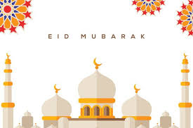

Eid ul-Fitr is an auspicious festival celebrated by Muslims all around the world. The occasion marks the end of the Islamic holy month fasting of Ramadan. It is believed that Prophet Muhammad got the first revelation of the Holy Quran in this month. The date of the festivity is dependent on the combination of the sighting of the new moon as well as the astronomical calculations. Moreover, the onset of Eid also depends on where an individual is in the world and when the new moon is seen.
Importance and significance
Eid ul-Fitr falls on the first day of the month of Shawwal, which is the only day in that month when Muslims are not permitted to fast. The first day of the Eid month depends on any lunar Hijri month. This occasion has a unique salat (Islamic prayer), consisting of two rakats (units) and is usually offered in a large gall or open field. It is to be performed only in a congregation (Jama�at) and has added six Takbirs (raising of the hands to the ears while saying �Allahu Akbar� which means �God is the greatest�); three in the beginning of the first raka and the remaining three before ruku in the second raka�ah in the Hanafi school of Sunni Islam.
It is often said that Muslims believe they are commanded by Allah � as also mentioned in the Holy book of Islam Quran � to continue the fasting till the very last day of Ramadan and pay the Zakat al-Fitr before offering the prayers for Eid.
ALSO READ | Eid ul Fitr 2018 Date India: When is Eid ul Fitr in 2018?
The festivities of Eid begin only after the crescent moon is seen. Eid ul-Fitr implies breaking of the fasting time frame, which goes on for a month. The festival is celebrated over three days and is also called Choti Eid. Following the Sunnah, which is the record of teachings of the Prophet Mohammad, Muslims wake up early in the morning, chant their Salat ul-Fajr (daily prayers), take a bath and wear ittar (perfume). It is a custom to eat a hearty breakfast before people head to perform the special congregational prayers. Many Muslims also recite the takbir, which is the declaration of faith, on their way to the prayer ground and take part in Zakat al-Fitr (charitable contributions).
Countries like India, Pakistan, and Bangladesh started observing fast from May 16 this year. Depending on when the new moon will be spotted, Muslim around the world will begin to celebrate Eid from June 14.
|